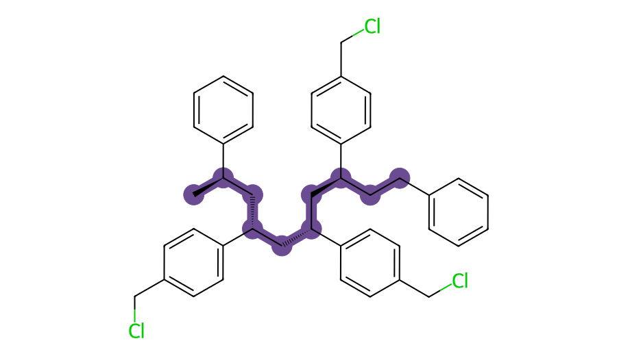
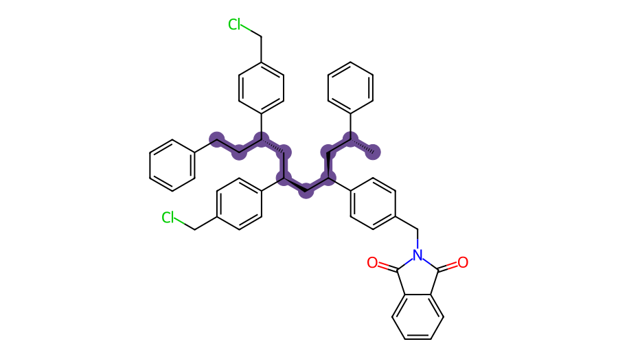
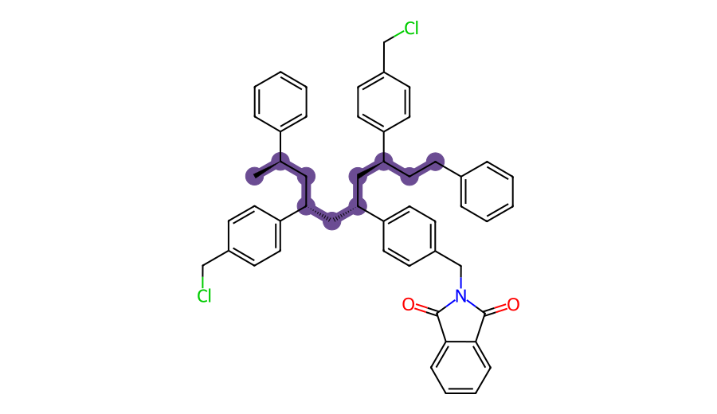
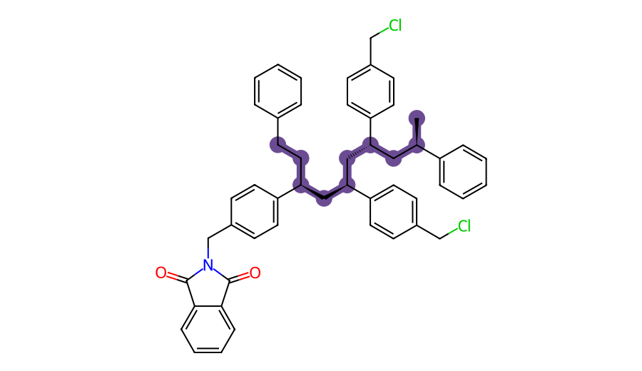
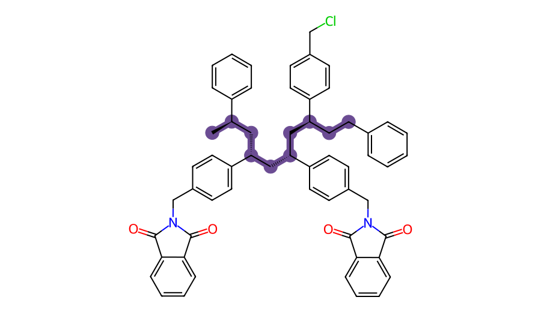
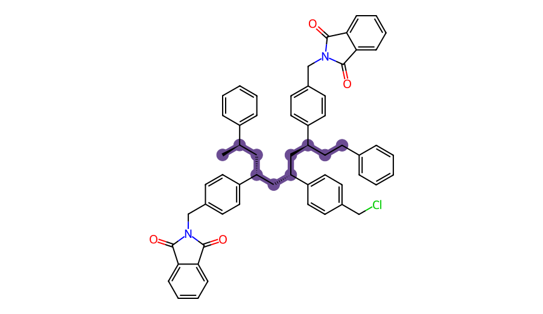

occ_none
S — Cl — Cl — Cl — S

91 atoms including H; open backbone with 10 carbons and 9 bonds.
Geometry: qualified_sampled_structure · G: pending_native_thermal_QC
Polymer-model guide · Current fields and QC · Frozen calculation plan
Conditional modeling scenarios, not a measured polymer loading. S = plain styrene padding; Cl = a reactive benzyl-chloride site; A = a grafted motif. Each symbol denotes one repeat unit. Purple bonds show the actual open carbon backbone. The same tagged backbone is preserved across matched cases. A drawing is a connectivity diagram, not an optimized conformation.
11/12 qualified DFT structures; 0/6 qualified native G values. Blank scientific quantities remain pending until the required records pass QC.
Electronic site nonadditivity measures the sampled effect of occupying both sites, including backbone/conformational response. Conditional grafting ΔG adds the qualified precursor/base/byproduct terms under defined conditions.
Neighbor penalty: ΔΔG = G(AA) + G(00) − G(A0) − G(0A) = ΔG(graft j | i occupied) − ΔG(graft j | empty).
A positive penalty makes the next graft less favorable. Its full grafting ΔG can still be negative. Electronic ΔΔE is never relabeled as ΔΔG.
| Scenario | Occupied sites | Intervening units | ΔΔE (kJ/mol) | ΔΔG (kJ/mol) |
|---|---|---|---|---|
| adjacent | [2, 3] | 0 | -1.55 | pending |
| one_spacer | [2, 4] | 1 | -5.07 | pending |
Sites i and j follow the scenario order above. All values are kJ/mol; pending values require qualified polymer and reagent thermochemistry.
| Scenario | Byproduct model | i on empty | j on empty | j with i occupied | i with j occupied |
|---|---|---|---|---|---|
| adjacent | free_ions | pending | pending | pending | pending |
| adjacent | contact_pair | pending | pending | pending | pending |
| one_spacer | free_ions | pending | pending | pending | pending |
| one_spacer | contact_pair | pending | pending | pending | pending |
S — Cl — Cl — Cl — S

91 atoms including H; open backbone with 10 carbons and 9 bonds.
Geometry: qualified_sampled_structure · G: pending_native_thermal_QC
S — A — Cl — Cl — S

105 atoms including H; open backbone with 10 carbons and 9 bonds.
Geometry: qualified_sampled_structure · G: pending_native_thermal_QC
S — Cl — A — Cl — S

105 atoms including H; open backbone with 10 carbons and 9 bonds.
Geometry: qualified_sampled_structure · G: pending_native_thermal_QC
S — Cl — Cl — A — S

105 atoms including H; open backbone with 10 carbons and 9 bonds.
Geometry: qualified_sampled_structure · G: pending_native_thermal_QC
S — A — A — Cl — S

119 atoms including H; open backbone with 10 carbons and 9 bonds.
Geometry: qualified_sampled_structure · G: pending_native_thermal_QC
S — A — Cl — A — S

119 atoms including H; open backbone with 10 carbons and 9 bonds.
Geometry: qualified_sampled_structure · G: pending_native_thermal_QC
Native G uses the selected sampled conformer, not an equilibrated conformational ensemble. Model favorability does not establish attachment rates, yields, graft spacing, swelling, electronic coupling or whole-bead performance.